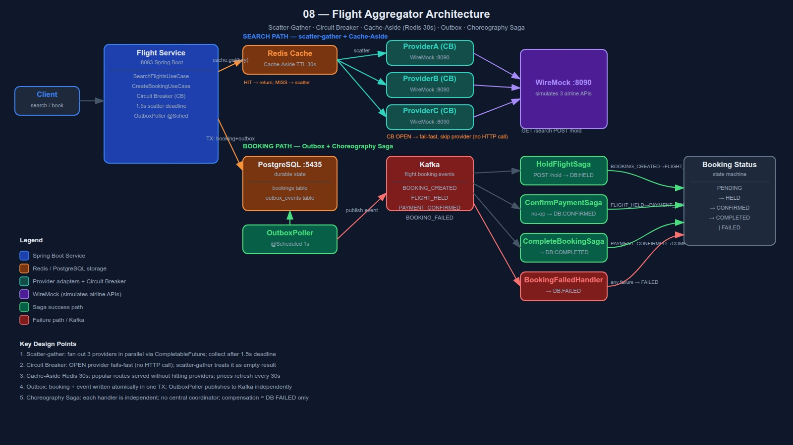

Scatter-Gather · Circuit Breaker · Cache-Aside · Outbox · Choreography Saga
A flight aggregator queries 3 airline APIs in parallel, merges results within a 1.5s deadline, and books flights via a distributed Choreography Saga with Outbox-guaranteed event delivery.
Core challenge: return results even if a provider is slow or down, and book a flight reliably across distributed steps that can each fail independently.

SearchFlightsUseCase.search(origin, dest, date)
│
├─ cache.get(key) ──── HIT ──────────────────────────────► return cached
│ MISS ↓
├─ CompletableFuture.supplyAsync(ProviderA::search) ┐
├─ CompletableFuture.supplyAsync(ProviderB::search) ├─ parallel
├─ CompletableFuture.supplyAsync(ProviderC::search) ┘
│ wait max 1.5s
│
│ ProviderA → OK (120ms) → 4 flights
│ ProviderB → CB OPEN → empty (fail-fast, no wait)
│ ProviderC → OK (800ms) → 3 flights
│
└─ merge → cache 30s → return 7 flights
CLOSED — calls go through normally
OPEN — fail-fast, skip provider (no HTTP call)
HALF_OPEN — probe one call, re-close if ok
Flight prices change every few minutes. 30s TTL balances freshness vs provider load. Popular routes (LHR→JFK) served from Redis without hitting providers again.
Atomically write booking + event in one DB transaction. Poller publishes to Kafka. No dual-write risk.
CreateBookingUseCase.book(flightId, userId)
│
└─ @Transactional ────────────────────────────────────────┐
│ INSERT INTO bookings (id, status=PENDING, ...) │
│ INSERT INTO outbox_events │
│ (aggregate_id, event_type=BOOKING_CREATED, │
│ payload=JSON, published=false) │
└─────────────────────────────────────────────────────-┘
│
▼ (async, every 1s)
OutboxPoller (@Scheduled every 1s)
SELECT * FROM outbox_events WHERE published = false
│
├─ kafka.send("flight.booking.events", event).get() ← await broker ack
│ on success → markPublished(event.id) ← only after ack
│ on exception → log warn, leave published=false ← retry next tick
└─ at-least-once delivery guaranteed
Why not just publish directly to Kafka in the use case?
If Kafka is down at commit time → booking saved but event lost forever.
Outbox decouples DB commit from Kafka availability.
Each step consumes a Kafka event, performs work, updates booking state, publishes the next event. No central coordinator.
Each step is independent — deployable and testable in isolation. No single coordinator is a bottleneck or SPOF. Fits naturally with Kafka event streaming.
Mark booking FAILED in DB only. No provider rollback stubs needed. Real-world would add ReleaseHoldCommand — that pattern is covered in project 09.
| Decision | Choice | Why |
|---|---|---|
| Aggregation | Scatter-gather, 1.5s deadline | Partial results beat timeout; slow provider must not block |
| Circuit Breaker | Per-provider, resilience4j default | Fail-fast on unhealthy provider; no wait for open CB |
| Cache | Redis Cache-Aside, 30s TTL | Volatile prices; 30s balances freshness vs provider load |
| Saga style | Choreography | Decoupled steps; orchestration in project 09 |
| Outbox | Atomic booking + event in one TX | Guarantees event delivery even if Kafka is temporarily down |
| Payment | No-op | Payment is not the learning goal; Saga state machine is |
| Compensation | DB-only (mark FAILED) | Simpler; full compensation in project 09 |
| Kafka DLT | DefaultErrorHandler + DeadLetterPublishingRecoverer, 3 retries × 1s | Poison messages route to .DLT topic after 3 retries; consumer group never stalls |
| HoldFlightSaga order | Kafka send (await ack) before DB update | If Kafka fails → DB stays PENDING → catch publishes BOOKING_FAILED — no stuck HELD state |
Three failure modes — each handled at a different layer.
1. Provider failure (search)
────────────────────────
resilience4j @CircuitBreaker per provider
CLOSED → OPEN after 3/5 failures → fail-fast (no HTTP call)
scatter-gather treats CB-open as empty List → partial results returned
2. Poison Kafka message (saga)
────────────────────────────
KafkaConfig: DefaultErrorHandler + DeadLetterPublishingRecoverer
3 retries × 1s backoff
After 3 failures → route to flight.booking.events.DLT
Consumer group continues; DLT inspected manually / alerting
3. HoldFlightSaga failure order
──────────────────────────────
kafka.send("FLIGHT_HELD").get() ← await ack FIRST
bookingRepository.updateStatus(HELD)
If Kafka throws: DB stays PENDING
catch block sends BOOKING_FAILED
BookingFailedHandler marks DB FAILED
→ clean failure path, no stuck HELD state
What we build ourselves — to understand what managed services abstract away.
| What we build | AWS equivalent |
|---|---|
| Scatter-gather (CompletableFuture) | Lambda fan-out via SNS |
| Circuit Breaker (resilience4j) | API Gateway timeout + retry policies |
| Redis Cache-Aside | ElastiCache (Redis) |
| Outbox Poller (@Scheduled) | DynamoDB Streams → Lambda |
| Kafka (saga events) | EventBridge / SQS FIFO |
| WireMock (provider stubs) | Real airline GDS APIs (Amadeus, Sabre) |